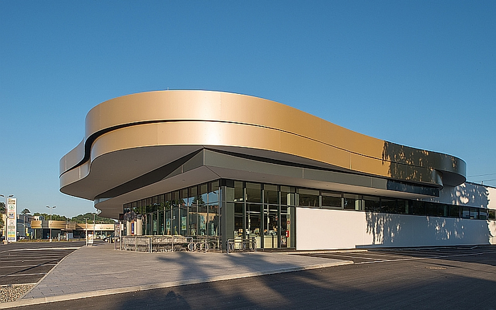
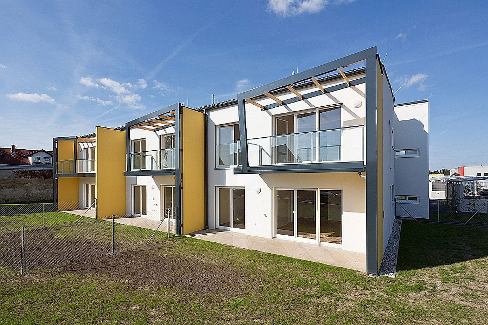
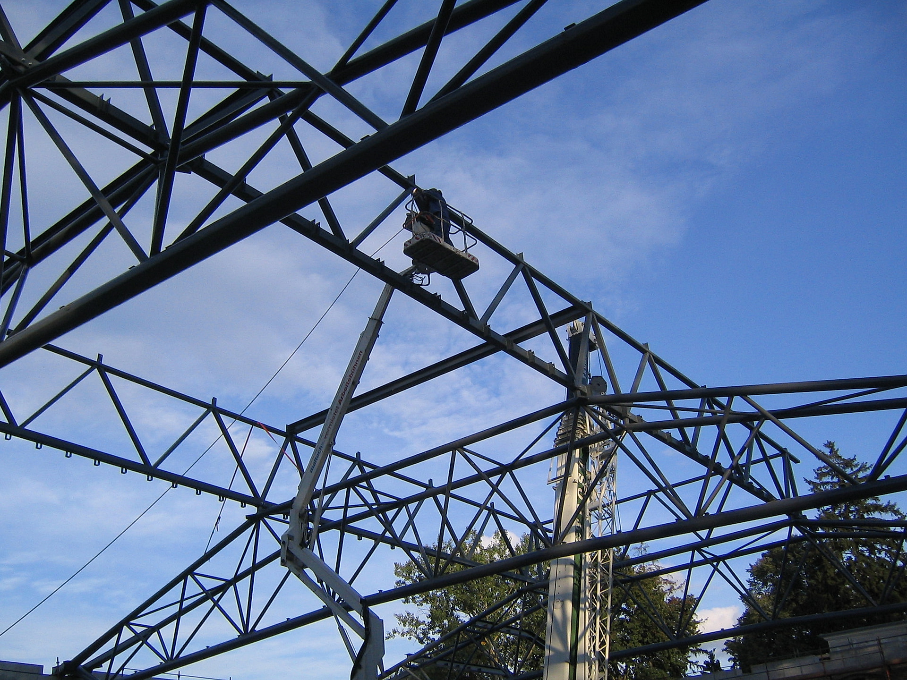

Bau-Projektmanagement · seit 1964
Wir bringen
Bauvorhaben sauber
zur Ausführung.
Wer wir sind
Ein Familienbüro mit dem Anspruch eines Generalplaners.

WHA · BiedermannsdorfDie Stickelberger Projektmanagement GmbH ist ein österreichisches Planungs- und Bau-Projektmanagementbüro mit Sitz in Mödling. In drei Generationen ist hier ein Erfahrungsschatz gewachsen, den man nicht kaufen, sondern nur über Jahrzehnte aufbauen kann.
Was uns trägt, sind familiäre Werte und der direkte Draht zum Bauherrn. Was uns vom Durchschnitt trennt, ist fachliche Tiefe und eine moderne Infrastruktur, die jedes Projekt nachvollziehbar steuerbar macht. Bei uns betreut Sie kein wechselndes Team, sondern dieselben Ansprechpartner — vom Erstgespräch bis zur Schlussrechnung.
60 Jahre
über drei Generationen gewachsen
Ein Ansprechpartner
vom Entwurf bis zur Übergabe
Mödling
tätig in der gesamten Region
Was wir leisten
Drei Disziplinen,
ein durchgängiger Bauprozess.
Wir decken die entscheidenden Phasen eines Bauvorhabens selbst ab. Das spart Reibungsverluste an den Schnittstellen und hält Termine, Kosten und Qualität in einer Verantwortung.
Planung
Vom Vorentwurf über den Entwurf bis zur Ausführungsplanung. Wir entwickeln tragfähige Lösungen, die sich auf der Baustelle auch tatsächlich umsetzen lassen — und denken Wirtschaftlichkeit von Anfang an mit.
Örtliche Bauaufsicht
Wir sind vor Ort, wo gebaut wird. Wir überwachen die Bauausführung, prüfen Qualität und Mängel und halten die Kosten konsequent im Blick — damit am Ende stimmt, was vereinbart wurde.
Projektmanagement & Steuerung
Wir koordinieren Termine, Kosten und Qualität über alle Projektphasen hinweg und führen alle Beteiligten zusammen. So behalten Sie als Bauherr jederzeit den Überblick, ohne sich im Detail zu verlieren.

Seit 1964 am Bau
Gebaut wird im Detail.
Verantwortet wird im Ganzen.
Ausgewählte Referenzen
Was geplant wurde, steht.
Eine Auswahl aus über sechs Jahrzehnten — vom Fachmarktzentrum bis zur Wohnhausanlage. Jedes davon ist ein abgeschlossenes Bauwerk, kein Versprechen.
Zahlen & Fakten
Substanz lässt sich messen.
Kontakt
Reden wir über Ihr Bauvorhaben.
Sie haben ein Projekt im Kopf oder bereits einen ersten Plan auf dem Tisch? Schildern Sie uns kurz, worum es geht. Wir hören zu, ordnen ein und sagen Ihnen offen, wie wir Sie am besten unterstützen.